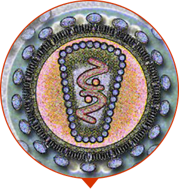

-

100% prodotto organico
Sicuro! -

Efficacia del 98%
dimostrata dai clienti! -

2765 uomini sono già
guariti
Rivoluzione nella cura della prostatite cronica
20 uomini in Europa si sono già dimenticati di dolori e problemi nella regione dell’uretra
-
PASSO 1
scompaiono dolori, fitte e bruciore nella zona del pube e dei lombi
-
PASSO 2
si inizia ad urinare con regolarità, non così spesso, e scompare l’infiammazione
-
PASSO 3
l’erezione compare nuovamente, l’organismo si rinforza, la prostatite scompare per sempre

CONTROLLATI! SINTOMI DELLA PROSTATITE:
-

Una volta all’anno o una volta ogni sei mesi sentite tirare nella zona del pube
-

Ogni tanto sentite delle lievi pressioni locali
-

Vi siete accorti che andate in bagno più spesso
-

Un testicolo sembra pendere più dell’altro
-

Avete a volte problemi di diarrea e affini
-

Vi sembra che la vostra erezione sia più debole
-

Si è abbassata la libido
-

Avete avuto almeno una volta difficoltà ad orinare
SE AVETE TROVATO PER LO MENO UNO DI QUESTI SINTOMI, DOVETE INIZIARE LA CURA AL PIU’ PRESTO!
Il dolore vi disturba. La prostatite non permette una vita normale. Starete ancora peggio entro 1-2 anni. Sterilità. Sangue durante orinazione ed eiaculazione. Calcoli renali (fino a 500 ml). Infiammazioni interne.
-

IMPOTENZA
apatia sessuale incurabile
-

ADENOMA DELLA PROSTATA
Malattia del tessuto della prostata che comporta ammassi tumorali e “nodi”
-

ONCOLOGIA
Tumore alla prostata, la più comune causa di morte per gli uomini
INIZIATE LA CURA ORAE SIATE DEL TUTTO IN SALUTE!
PREPARATO EFFICACE IN SALVATAGGIO DELLA SALUTE MASCHILE!
-

Senza il massaggio umiliante
-

Senza punture e pillole costose
-

Senza operazioni chirurgiche
-

Senza diagnosi costose
-

Efficacia dimostrata clinicamente 98% dei pazienti curati
-

Riconosciuto come preparato più efficace per gli uomini sopra i 40
-

Approvato dall’Associazione Medica Europea
-

Tecnologia sopra la media e 100% di componenti ecologici, senza chimicati


-

L' estratto dei frutti di palma Sabal
BLOCCA L’INGRANDIMENTO DELLA GHIANDOLA PROSTATICA, HA UN’AZIONE IMMUNOSTIMOLANTE
-

L'estratto di prugne africane
RIDUCE IL GONFIORE E L’INFIAMMAZIONE DELLA PROSTATA, PREVIENE LA FORMAZIONE DI TESSUTI TUMORALI
-
I semi di zucca
ELIMINANO I RESIDUI NELL’URETRA, RIPRISTINANO IL CORRETTO FUNZIONAMENTO DELLA PROSTATA

Modalità d'uso:
- 1 capsula al giorno durante il pasto, bevendo poi un bicchiere d'acqua. Non superare la dose consigliata.
- Ciclo di assunzione: minimo 40 giorni.
IL PARERE DELL’ESPERTO

Prostero ha reso più facile il lavoro ai “dottori gratuiti”. Io vedo i miei pazienti 2 volte. La prima volta, quando vengono per avere la diagnosi, la seconda quando dopo un mese tornano per dirmi “Grazie, sono sano!”. Invece le cliniche costose non sono fortunate, con Prostero per loro sarà 10 volte più difficile guadagnare sulle persone semplici.
Alessandro Carpi
Policlinico, professore, andrologo, sessuologo.Si è laureato con lode alla Sapienza di RomaStage pratico 23 anni

Gli ingredienti di Prostero parlano da sé. E’ un preparato assolutamente sicuro ed innocuo per le persone anziane. Grazie alla formula unica e alla concentrazione di componenti attivi e di vitamine viene eliminata l’infiammazione, si ripristina una corretta erezione, la prostatite non torna. L’organismo maschile inizia a lavorare come un orologio svizzero.
Ivano GIorgi
Andrologo e primario, dottore di prima categoria.Laureato presso la Sapienza di RomaStage pratico 19 anni
EFFICACIA DIMOSTRATA CLINICAMENTE
RISULTATO DELLE RICERCHE
PREPARATI FARMACEUTICI TIPI CONTRO LA PROSTATITE
-
56%Diminuzione di dolore, fitte e pressioni
-
57%Stabilizzazione dell’orinazione
-
28%Diminuzione della minzione fino al livello standard
-
9%Diminuzione delle dimensioni della prostata fino al livello standard
-
35%Assenza di ricadute dopo la fine del ciclo di cura
PROSTERO
-
100%Diminuzione di dolore, fitte e pressioni
-
97%Stabilizzazione dell’orinazione
-
98%Diminuzione della minzione fino al livello standard
-
89%Diminuzione delle dimensioni della prostata fino al livello standard
-
98%Assenza di ricadute dopo la fine del ciclo di cura
VANTAGGI DI Prostero
-

AIUTO RAPIDO
Le sensazioni dolorose scompaiono la prima settimana
-

PRODOTTO IPOALLERGENICO
A differenza di antibiotici e creme per gli uomini
-

AZIONE EFFICACE SENZA EFFETTI COLLATERALI
Le tecnologie di alto livello permettono di ottenere un concentrato limpido di erbe curative senza alcun chimicato
-

SI GUARISCE IN MANIERA COMPLESSIVA
Azione intensiva sui tessuti della prostata, azione purificativa. Più forze ed energie, cresce la libido, si ristabilisce la potenza sessuale
EVITATE I FALSI
Con l’aumento di popolarità di Prostero, sono comparsi dei falsi a prezzi esilaranti. Solo qui potete acquistare il prodotto originale con lo sconto del 50%.
-

Effettuate l’ordine istantaneamente e ricevete uno sconto del 50%
-

Attendete la chiamata di un operatore per definire i dettagli
-

Senza rischi! Ricevete il pacco e pagate alla posta
ACCETTIAMO ORDINI DA TUTTA EUROPA
-
100% prodotto organico
Sicuro! -
Efficacia del 98%
dimostrata dai clienti! -
2765 uomini sono già
guariti
Rivoluzione nella cura della prostatite cronica
20 mila uomini in Europa si sono già dimenticati di dolori e problemi di orinazione
-
PASSO 1
scompaiono dolori, fitte e bruciore nella zona del pube e dei lombi
-
PASSO 2
si inizia ad urinare con regolarità, non così spesso, e scompare l’infiammazione
-
PASSO 3
l’erezione compare nuovamente, l’organismo si rinforza, la prostatite scompare per sempre
RECENSIONI DEGLI UOMINI, CHE HANNO SCONFITTO LA PROSTATITE
Sono arrivato alla visita depresso. Pensavo mi avrebbero fatto il massaggio della prostata. Il dottore ha detto che non c’è da aver paura se si inizia la cura ora subito. Mi ha prescritto Prostero. Dopo 3 mesi mi sento benissimo!
V.S. Bologna
Avevo dolori tali che di fare sesso con mia moglie neanche se ne poteva parlare. Soffrivo. Mia moglie mi ha portato Prostero. In un mese ero irriconoscibile. In salute come un toro da monta. Nessun dolore e vado in bagno come tutti. Il sesso ora va benissimo.
C****o, Verona
Forti dolori al pube e all’uretra. Gonfiore, infiammazione. La diagnosi: “prostatite”. Mi sono preparato per l’operazione. Sono stato anche dai più noti dottori della capitale. Mi hanno visitato. Mi hanno prescritto Prostero. Dopo un mese è sparito ogni sintomo. Vado in bagno tranquillamente senza dolori.
****, Como
Ordinatelo prima che il prezzo salga